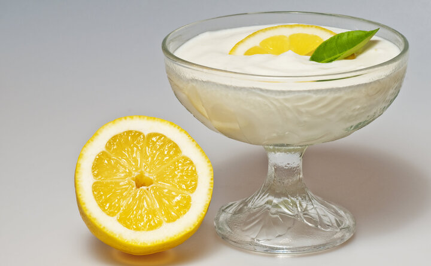

descriçao:
extremamente cremoso, derrete na boca, sem aquela textura de textura de gelatina que encontramos na maioria dos pudins.
Para ficar perfeito, a calda de caramelo que escorre pelo pudim dá o toque final a esta maravilhosa receita
ingredientes
- 1 lata de leite condensado
- 1 lata de creme de leite
- 1/2 copo americano de suco de limão
modo de preparo
- No liquidificador, bata o leite condensado e o creme de leite por 3 minutos.
- Acrescente aos poucos o suco de limão e continue batendo.
- Despeje o mousse em um refratário e leve à geladeira.